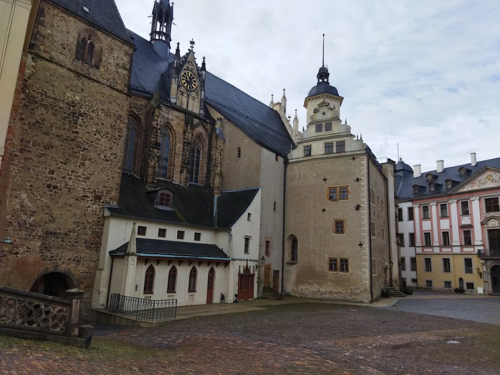
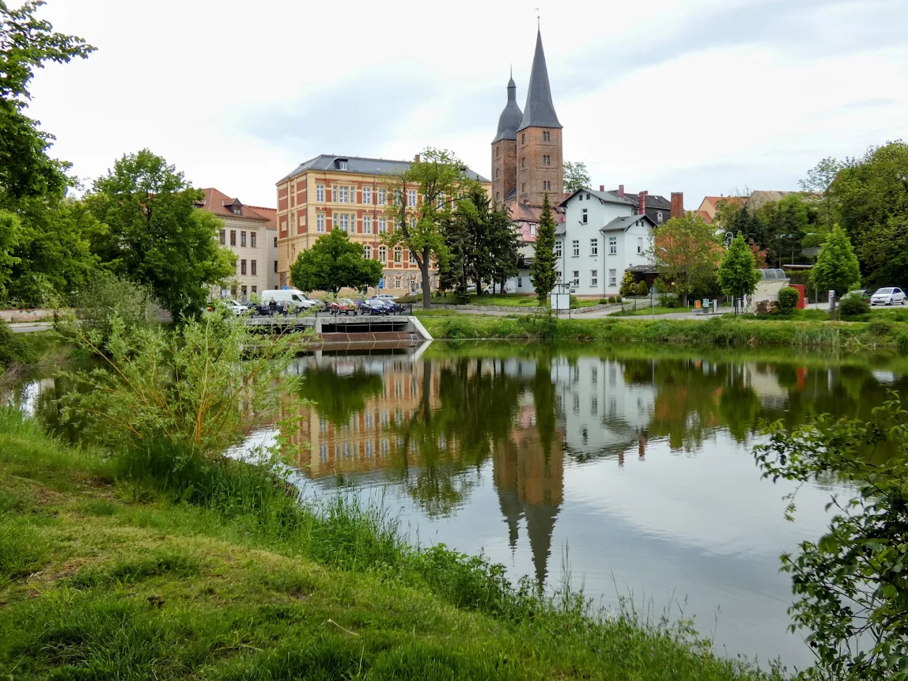

Als ansässiger SEO-Dienstleister in Altenburg (04600) helfe ich Kleinunternehmen, Handwerkern und Selbstständigen, bei Google-Suchen wie „Klempner Altenburg" oder „Friseur Altenburger Land" ganz oben zu erscheinen — mehr Anrufe, mehr Anfragen, mehr Umsatz aus der Region.
In Altenburg und dem Altenburger Land greifen täglich hunderte Menschen zum Smartphone und googeln nach lokalen Dienstleistern. Wer in den ersten drei Ergebnissen nicht erscheint, existiert für diese Kunden schlicht nicht. Lokales SEO sorgt dafür, dass Ihr Unternehmen genau dann sichtbar ist, wenn jemand in Ihrer Region aktiv nach Ihrem Angebot sucht.
Quellen: Google/Ipsos, BrightLocal Local Consumer Review Survey
Geschätzte Verteilung für lokale Dienstleister in Städten wie Altenburg
Lokale Suchmaschinenoptimierung (Local SEO) ist die gezielte Optimierung Ihrer Online-Präsenz, damit Google Ihr Unternehmen bei ortsbezogenen Suchanfragen in Altenburg und dem Altenburger Land priorisiert. Es geht nicht darum, irgendwo in Deutschland zu ranken — es geht darum, genau dann sichtbar zu sein, wenn ein potenzieller Kunde 500 Meter von Ihrem Ladengeschäft entfernt sein Smartphone in die Hand nimmt und googelt.
Die drei Einträge, die direkt unter der Google-Karte erscheinen, haben eine durchschnittliche Klickrate von über 40 %. Ich optimiere Ihr Google Business Profile so, dass Sie in Altenburg und Umgebung in diesem begehrten Bereich erscheinen — inklusive Öffnungszeiten, Fotos, Bewertungsmanagement und Beiträgen.
Suchbegriffe wie „Elektriker Altenburg", „Steuerberater Altenburger Land" oder „Friseur 04600" werden von echten Kunden täglich eingegeben. Ich recherchiere exakt, welche lokalen Keywords in Ihrer Branche gesucht werden, und optimiere Ihre Website und Inhalte gezielt dafür — mit messbaren Rankings.
Einträge in regionalen Verzeichnissen (Das Örtliche, Gelbe Seiten, Yelp), lokale Partnerlinks und Erwähnungen in Altenburg-relevanten Quellen stärken die Autorität Ihres Unternehmens bei Google. Ich baue konsistente NAP-Daten (Name, Adresse, Telefon) auf, die Google als vertrauenswürdig einstuft.
Google-Bewertungen sind ein direkter Rankingfaktor für lokale Suchergebnisse. Ich helfe Ihnen, ein systematisches Bewertungs-System aufzubauen, das zufriedene Altenburger Kunden motiviert, eine Rezension zu hinterlassen — und erkläre, wie Sie professionell auf Feedback reagieren.
Strukturierte Daten (LocalBusiness Schema) sagen Google exakt, wer Sie sind, wo Sie sitzen und was Sie anbieten. Ich implementiere das korrekte JSON-LD für Ihr Unternehmen in Altenburg — Name, Adresse, Telefon, Öffnungszeiten, Leistungen — damit Google keine Zweifel hat.
Kein Rätselraten. Jeder Monat erhalten Sie einen klaren Bericht: welche Keywords in Altenburg gestiegen sind, wie viele Klicks Ihr Google Business Profile generiert hat, wie sich die organischen Zugriffe entwickeln und was als nächstes optimiert wird — transparent und verständlich.
Lokales SEO ist kein einmaliger Schalter, sondern ein strukturierter Prozess. Hier erfahren Sie genau, was ich in den ersten Monaten für Ihr Altenburger Unternehmen tue — Schritt für Schritt, ohne Fachjargon.
Ich analysiere Ihre aktuelle Online-Sichtbarkeit in Altenburg: Google Business Profile Status, Website-Technik, bestehende Rankings für lokale Keywords, Bewertungen, NAP-Konsistenz in Verzeichnissen und die SEO-Stärke Ihrer wichtigsten lokalen Mitbewerber. Das Ergebnis ist ein klarer Ausgangspunkt — keine Annahmen, nur Daten.
Ich recherchiere alle relevanten lokalen Suchbegriffe für Ihre Branche in Altenburg, Nobitz, Meuselwitz, Schmölln und dem weiteren Altenburger Land. Dann priorisiere ich Keywords nach Suchvolumen, Wettbewerb und Kaufabsicht — damit wir zuerst die Begriffe angreifen, die schnell zu Anfragen führen.
Ihr Google Business Profile ist das wichtigste lokale SEO-Instrument überhaupt. Ich optimiere Kategorie, Leistungen, Öffnungszeiten, Fotos, Antworten auf Bewertungen, Beiträge und Q&A-Bereich vollständig und richte Google Search Console sowie Analytics für genaues Tracking ein.
Titel-Tags, Meta-Beschreibungen, Überschriften und Seitentexte Ihrer Website werden für Altenburg-Keywords überarbeitet. Ich füge Standortseiten, lokale Serviceseiten und ggf. einen Blog mit Altenburg-relevantem Inhalt hinzu — das sind Seiten, die Google direkt für lokale Suchen indexiert.
Ich trage Ihr Unternehmen konsistent in lokale und branchenspezifische Verzeichnisse ein, suche nach regionalen Partnerlinks (z. B. IHK Ostthüringen, lokale Branchenverbände, Altenburg-relevante Portale) und baue die lokale Autorität Ihrer Domain dauerhaft auf — das ist langfristige Investition, die sich auszahlt.
Am Ende jeden Monats erhalten Sie einen Bericht mit Ranking-Entwicklung, Klicks, Impressionen, Google Business Aufrufen und Handlungsempfehlungen für den nächsten Monat. SEO ist keine Einmalmaßnahme — ich optimiere kontinuierlich, reagiere auf Google-Updates und passe die Strategie an Ergebnisse an.
Wenn Ihre Kunden in Altenburg, Nobitz, Schmölln, Meuselwitz oder dem Altenburger Land wohnen und Sie bei Google finden sollen, ist lokales SEO Ihre effektivste Marketingmaßnahme.
Elektriker, Klempner, Maler, Dachdecker und Schreiner — bei „Handwerker Altenburg" ganz oben erscheinen.
Friseure, Nagelstudios, Massagepraxen und Kosmetikstudios, die neue Stammkunden in Altenburg gewinnen.
Heilpraktiker, Physio- und Ergotherapeuten, Pflegedienste und Zahnärzte in der Region Altenburg.
Restaurants, Cafés und Bäckereien in Altenburg, die bei „Essen gehen Altenburg" sichtbar sein wollen.
Steuerberater, Rechtsanwälte und Finanzberater, die gezielt Mandanten aus dem Altenburger Land ansprechen.
Autowerkstätten, Kfz-Händler und Taxiunternehmen, die bei lokalen Suchanfragen gefunden werden wollen.
Musikschulen, Nachhilfe, Tanzstudios und Kursanbieter, die Schüler und Teilnehmer aus Altenburg suchen.
Gartenbau, Reinigungsdienste, Hausmeisterservice und weitere lokale Dienstleister in Altenburg und Umgebung.
Keine versteckten Kosten, kein Kleingedrucktes. Alle Pakete sind monatlich kündbar — ich verdiene Ihr Vertrauen jeden Monat neu durch messbare Ergebnisse.
Einstieg ins lokale SEO für Selbstständige und Kleinstunternehmen in Altenburg mit einem sehr begrenzten Marketingbudget.
Der vollständige lokale SEO-Service für Kleinunternehmen in Altenburg, die bei Google sichtbar wachsen wollen.
Maximale lokale Sichtbarkeit für Unternehmen in Altenburg, die in mehreren Bereichen oder umliegenden Städten ranken wollen.
Alle Pakete monatlich kündbar. Keine Einrichtungsgebühr. Fragen? Schreiben Sie mir.
| Merkmal | Vahid Sediqi (Altenburg) | Große SEO-Agentur |
|---|---|---|
| Ortskenntnis Altenburg | Direkt ansässig | Kein lokaler Bezug |
| Preis pro Monat | Ab €199 / Monat | €500 – €3.000+ |
| Ansprechpartner | Direkt — Sie & ich | Wechselnde Projektmanager |
| Mindestvertragslaufzeit | Monatlich kündbar | 6–12 Monate |
| Reporting | Monatlich, verständlich | Automatisiert, schwer lesbar |
| Persönliches Treffen | Möglich in Altenburg | Nicht möglich |
Als in Altenburg (Pappelstraße 10, 04600) ansässiger SEO-Dienstleister bringe ich etwas mit, das keine Agentur aus Hamburg oder München leisten kann: echte Ortskenntnis. Ich weiß, dass Altenburger Kunden „Skatstadt" googeln, dass die IHK Ostthüringen ein wichtiger regionaler Anker ist und dass die Konkurrenz in Meuselwitz ganz anders aussieht als in Schmölln.
Ich optimiere Ihr Google Business Profile mit echten Altenburg-Fotos, baue Verlinkungen zu lokalen Verzeichnissen auf und erstelle Content, der auf Suchanfragen aus der Region abgestimmt ist — kein generischer SEO-Text, der überall passen könnte, sondern spezifischer Content, der Google und Ihren Kunden klar macht: Dieses Unternehmen ist in Altenburg zu Hause.


Direkt erreichbar per Telefon, E-Mail oder persönlichem Treffen. Kein Ticket-System. Antwort innerhalb von 24 Stunden.
Erste messbare Verbesserungen — mehr Klicks auf Google Business, steigende Impressionen für lokale Keywords — sind in der Regel nach 4–8 Wochen sichtbar. Stabile Rankings in den Top 3 für Altenburg-Keywords dauern je nach Wettbewerb 3–6 Monate. Branchen mit wenig lokaler Konkurrenz (z. B. Nischenhandwerker in Meuselwitz) ranken schneller als hart umkämpfte Bereiche wie Gastronomie in der Altenburger Innenstadt. Ich gebe Ihnen beim ersten Gespräch eine ehrliche Einschätzung für Ihre spezifische Branche.
Meine Pakete starten bei €199/Monat für das Starter-Paket (ideal für Selbstständige mit kleinem Budget) und gehen bis €599/Monat für das Wachstumspaket mit Multi-Standort-Optimierung im Altenburger Land und Leipzig. Es gibt keine Einrichtungsgebühr und keine Mindestvertragslaufzeit — monatlich kündbar. Im Vergleich zu einer großen SEO-Agentur (meist €500–3.000+/Monat) bekommen Sie bei mir direkten Kontakt, echte Ortskenntnis und keine versteckten Kosten.
Ja, das Einrichten und vollständige Optimieren Ihres Google Business Profils ist in allen Paketen enthalten. Wenn Sie bereits ein Profil haben, übernehme ich die Optimierung: vollständige Kategoriezuweisung, Leistungsbeschreibungen, Fotos aus Altenburg, Öffnungszeiten, Antworten auf bestehende Bewertungen und die Einrichtung regelmäßiger Google-Beiträge. Das Google Business Profile ist für lokales SEO in Altenburg der wichtigste einzelne Hebel — kein Unternehmen, das lokal sichtbar sein will, kann es sich leisten, es zu vernachlässigen.
Sehr wichtig. Bewertungsanzahl, durchschnittliche Sternebewertung und Aktualität der Rezensionen sind nachgewiesene Rankingfaktoren für den Google Local Pack. Ein Altenburger Elektriker mit 40 Bewertungen und 4,8 Sternen schlägt regelmäßig einen Mitbewerber mit 5 Bewertungen — auch wenn der sonst besseres SEO hat. Ich zeige Ihnen, wie Sie systematisch mehr Bewertungen von zufriedenen Kunden in Altenburg bekommen, ohne gegen Googles Richtlinien zu verstoßen.
Nein — technisch können Sie auch nur über Google Business Profile lokal ranken. In der Praxis haben Unternehmen mit einer professionellen Website jedoch deutlich bessere und stabilere Rankings als solche, die nur auf Google Business setzen. Eine Website gibt Google zusätzliche Signale (Inhalte, Keywords, Backlinks), ist ein Vertrauensbeweis für potenzielle Kunden und gehört Ihnen vollständig — Google Business Profile dagegen gehört Google. Wenn Sie noch keine Website haben, empfehle ich mein Webdesign Altenburg-Paket als idealen Einstieg.
Ich tracke konkrete, aussagekräftige Metriken: Keyword-Rankings für Altenburg-Suchbegriffe (wöchentlich), Impressionen und Klicks aus dem Google Local Pack, Google Business Profile Aufrufe (Profilansichten, Klicks auf Anrufen-Button, Wegbeschreibungsanfragen), organischer Website-Traffic aus Altenburg und Umgebung sowie monatliche Anfragenentwicklung. Jeder Monat bekommen Sie einen verständlichen Bericht — keine überladenen Dashboard-Screenshots, sondern klare Zahlen mit Kontext und Handlungsempfehlungen.
Ja. Lokales SEO in der Region bedeutet, nicht nur für „Altenburg" zu ranken, sondern auch für umliegende Orte wie Nobitz, Schmölln, Meuselwitz, Gößnitz und das gesamte Altenburger Land. Im Wachstumspaket ist Multi-Standort-Optimierung enthalten. Ich erstelle standortspezifische Seiten auf Ihrer Website und optimiere Ihre Präsenz gezielt für die Suchbegriffe, die Kunden aus diesen Orten eingeben — so erschließen Sie das gesamte Einzugsgebiet Ihres Unternehmens.
Buchen Sie jetzt ein kostenloses 30-Minuten-Gespräch. Ich schaue mir Ihre aktuelle Sichtbarkeit in Altenburg an und sage Ihnen ehrlich, was möglich ist — kein Verkaufsgespräch, kein Fachjargon, keine versteckten Agenden.
Oder rufen Sie direkt an: +49 176 62521106 — Montag bis Freitag, 9–18 Uhr